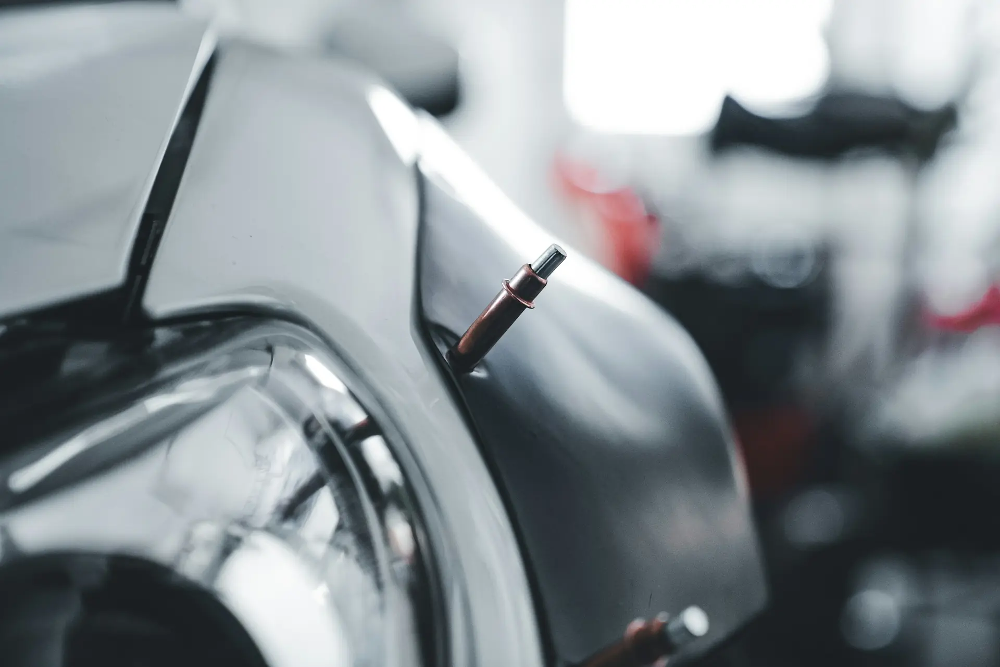
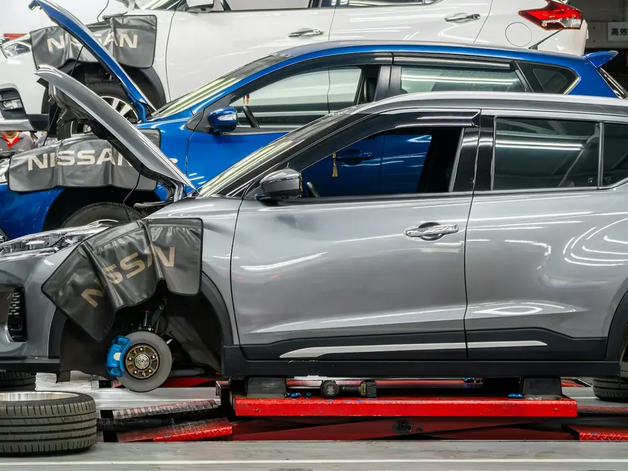

Karambolos javítás
Kárfelvétel a telephelyen, javítás a kész autóig, biztosítási ügyintézéssel.

Pécs, Szent Borbála u. 31.
Karosszérialakatos mester vezetésével, 1990 óta. Kárfelvétel a telephelyen, javítás és fényezés egy helyen, a biztosítóval mi intézünk mindent.
4,7 csillag36 Google-vélemény
H–Cs 7:00–15:30pénteken 7:00–15:00
1990 ótakarosszérialakatos mester vezeti
Díjtalan beszállításBaranya megyén belül
A kis horpadástól a karambolos autóig: lakatosmunka, fényezés és a biztosítási ügyintézés egy kézben.
Kárfelvétel a telephelyen, javítás a kész autóig, biztosítási ügyintézéssel.
Karosszériajavítás és -átalakítás, húzópados helyreállítás, bérhúzás.
Teljes és javító fényezés, a fényét vesztett felület polírozása.
A szélvédő és az oldalüvegek cseréje önrész nélkül.
Jégkárjavítás, műanyag elemek javítása és hegesztése.
Gyári, utángyártott vagy bontott alkatrész, igény szerint.
Az autót a telephelyünkön megnézzük, és felvesszük a kárt.
Kitölt egy meghatalmazást, hogy a biztosítóval mi tárgyalhassunk.
A kárfelvételi jegyzőkönyv alapján, a minden biztosító által elfogadott Audatex, AudaShare rendszerrel.
Ha hitel van az autón, megkérjük a banktól. Feltétele, hogy ne legyen díjelmaradás.
A jogalap tisztázása után, Önnel egyeztetve beszerezzük az alkatrészeket, és javítunk.
Csak a kedvezményes önrészt vagy az esetleges avulást fizeti (cégek az áfát), és átveszi a kulcsrakész autót.

A kedvezmény attól függ, ki fizeti a javítást. Alkatrészavulást egyik esetben sem kell fizetnie.
A részletekért érdeklődjön elérhetőségeinken.
Molnár János karosszérialakatos mester 1990-ben egyéni vállalkozóként kezdte a munkát; 1993. október 1. óta Mol-Car Kft. néven áll az ügyfelek rendelkezésére.
„Magas szakmai színvonalon, minőségi anyagokkal, rövid határidővel dolgozni.”
Üzleti filozófiánk
Egy egyedi, ritka munka is gyorsan és szépen, „meglepően olcsón” készült el.
A Google-vélemények alapjánFelkészült szakemberek, és a CASCO-s kár intézése is gyorsan ment.
A Google-vélemények alapjánMás kérdés? Hívjon nyitvatartási időben: 72/238-338.
Szerződésünk van az Allianz Hungária, a Generali-Providencia és a Groupama-Garancia biztosítóval, és korrekt kapcsolatot ápolunk az összes Magyarországon működő biztosítótársasággal.
Baleseti bejelentőt (kék-sárga), jogosítványt, személyi igazolványt, forgalmi engedélyt és a gépjármű-kárbejelentési adatlapot. Vállalkozás esetén aláírási címpéldányt, hitel, lízing vagy banki terhelés esetén a hitelintézet nevét.
Biztosítási kárnál a javítás után csak a kedvezményes önrészt vagy az esetleges avulást kell kifizetnie, cégek esetében az áfát. Utána a kulcsrakész autót a telephelyünkön átveheti.
Baranya megyén belül a telephelyünkre szállítás díjtalan.
Hétfőtől csütörtökig 7:00 és 15:30, pénteken 7:00 és 15:00 között.
Mol-Car Kft.
7628 Pécs, Szent Borbála u. 31.
Telefon és fax: 72/238-338
Mobil: 30/298-2126
Hétfő–csütörtök: 7:00–15:30
Péntek: 7:00–15:00
Szombat–vasárnap: zárva